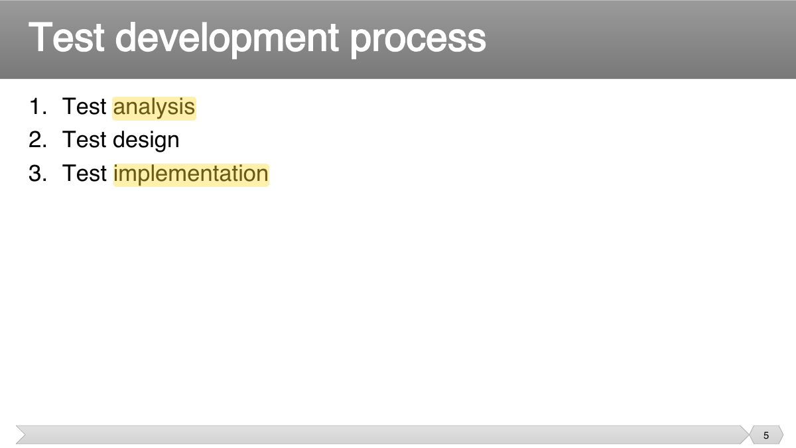
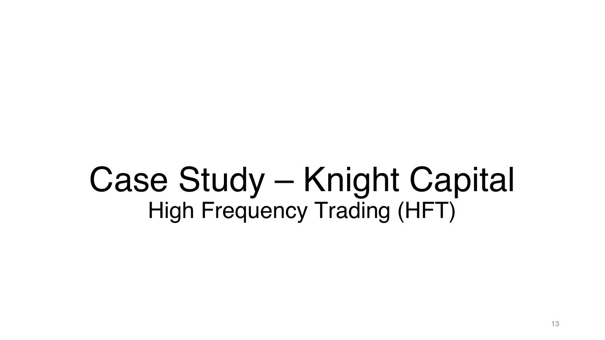
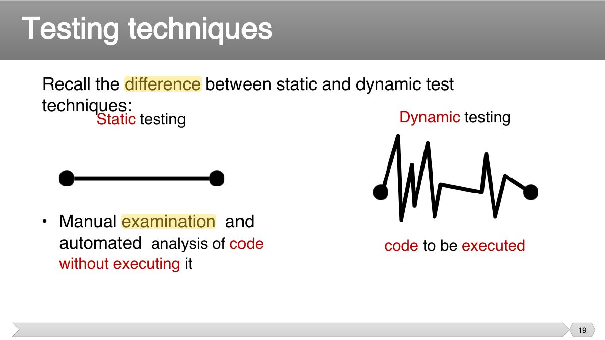
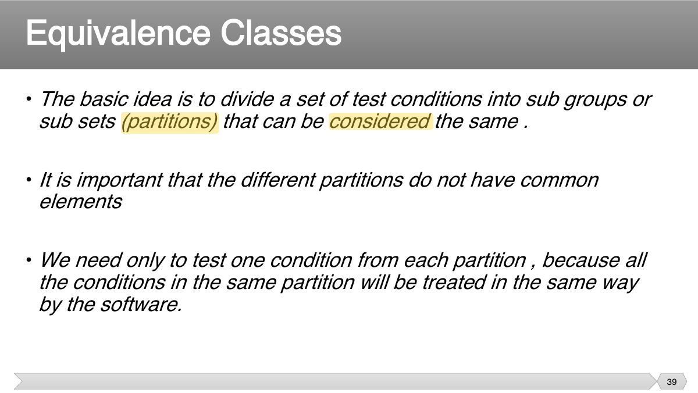

A field accepts integers 1–100. The equivalence classes are:
Test Design Techniques
The test development process, the Knight Capital case study, specification-based (black-box) techniques: equivalence partitioning, boundary value analysis, decision tables, state transition and use-case testing, non-functional testing, and experience-based techniques (error guessing, exploratory testing).
How to read this page
Every original slide is shown unchanged. Yellow marks on a slide point to a numbered note: hover or tap a mark to jump to its note, and hover a note to see its marks. Questions tagged Past exam appeared on a real paper; Prediction questions are likely angles, not confirmed. Pick an answer to each question: a wrong pick tells you why it is wrong, so you can try again.
All 117 slides
- 1 Slide 1
- 2 • The test development process • Categories of test design techniques
- 3 • Before we start testing, we need to know
- 4 • The test design process can be done in different ways, from very informal (little or no documentation), to very formal.
- 5 1. Test analysis 2. Test design
- 6 • The test basis documentation is analyzed in order to determine what to test, i.e. to identify the test conditions .
- 7 • “Throw a wide net!” • First; identify as many test conditions as possible
- 8 • During test design:
- 9 • In order to know what the system should do, we need to have a source of information about the correct behavior of the system an oracle
- 10 • During test implementation the test cases are organized in the test procedures
- 11 • The test execution schedule defines:
- 12 • Writing the test procedure is another opportunity to prioritize the tests, to ensure that the best testing is done in the time available.
- 13 Slide 13
- 14 • The
- 15 • Aug 1, 2012.
- 16 "Zombie Software" Blamed for Knight Capital Trading Snafu • A new algorithmic trading program had just been installed, and began
- 17 • SEC launched an investigation in Nov 2012. Findings:
- 18 Slide 18
- 19 Recall the difference between static and dynamic test techniques:
- 20 Categories of test design techniques
- 21 Slide 21
- 22 • Derive test cases from the functional specifications
- 23 • Derive systematically test cases from specification • Test cases are derived from how the software is constructed for
- 24 • Testing software against a specification of its external behavior without knowledge of internal implementation details
- 25 • Incorrect or missing functions • Interface errors
- 26 • How is functional validity tested? • How are system behavior and performance tested?
- 27 • Inputs
- 28 • Defining the input domain
- 29 • Early.
- 30 • Program code is not necessary
- 31 • Different testing strategies (functional, structural, fault-based, model- based) are most effective for different classes of faults
- 32 • Functional test is applicable in testing at all granularity levels:
- 33 1. Decompose the specification
- 34 Functional Specifications
- 35 An Example: Postal Code Lookup
- 36 Example: Representative Values
- 37 Slide 37
- 38 Single Defect Assumption : Failures are rarely the result of the
- 39 • The basic idea is to divide a set of test conditions into sub groups or sub sets (partitions) that can be considered the same .
- 40 • A black-box testing method that divides the input domain of a program into classes of data from which test cases are derived
- 41 • Typically the universe of all possible test cases is so large that you cannot try them all
- 42 • Partition the test cases into "equivalence classes” • Each equivalence class contains a set of "equivalent" test cases
- 43 Equivalence Partitioning
- 44 Equivalence Partitioning
- 45 Equivalence Partitioning
- 46 • When designing test cases, you may use different definitions of “equivalence”, each of which will partition the test case space
- 47 • When designing test cases, you may use different definitions of “equivalence”, each of which will partition the test case space
- 48 • Test multiple values in each equivalence class. • Often you’re not sure if you have defined the equivalence classes
- 49 Guidelines for Defining Equivalence Classes
- 50 • Look for ranges of numbers or values • Look for memberships in groups
- 51 Equivalence Partitioning - examples
- 52 Equivalence Partitioning - examples
- 53 Equivalence Partitioning - examples
- 54 Equivalence Partitioning - examples
- 55 Equivalence Partitioning - examples
- 56 • Technique
- 57 • Technique
- 58 • Test values, sizes, or quantities near the design limits
- 59 • A greater number of errors occur at the boundaries of the input domain rather than in the "center"
- 60 1. If an input condition specifies a range bounded by values a b and , test cases should be designed with values a b and as well as values just above and just below a b and
- 61 • When choosing values from an equivalence class to test, use the values that are most likely to cause the program to fail
- 62 • Create test cases to test boundaries of equivalence classes
- 63 Boundary Value Analysis - examples
- 64 Boundary Value Analysis - examples
- 65 Boundary Value Analysis - examples
- 66 • Numeric values are often entered as strings which are then converted to numbers internally [int x = atoi(str);]
- 67 • Don't get so wrapped up in testing boundary cases that you neglect to test "normal" input values
- 68 • Doesn’t require much thought • May miss internal boundaries
- 69 • Notes
- 70 • Why do both equivalence partitioning and boundary value analysis? • Boundary values are usually extreme values
- 71 • Equivalence Class Testing is appropriate when input data is defined in terms of intervals and sets of discrete values.
- 72 • Decision tables are a good way
- 73 • When creating decision tables, the specification is analyzed, and actions of the system are identified.
- 74 • Decision tables
- 75 Rule 1 Rule 2 Rule 3 Rule 4 Rule Rule Rule 7 Rule 8 5 6
- 76 Rule 1 Rule 2 Rule 3 Rule 4 Rule Rule Rule 7 Rule 5 6 8
- 77 Rule 1 Rule 2 & 6 Rule 3 Rule 4 Rule Rule & 8 5 7
- 78 • Example- Decision table for credit-card
- 79 Decision Table testing
- 80 Decision Table testing
- 81 • Decision tables are a good way to:
- 82 • A system can be in a finite number of different states. This aspects of the system can be described as a ‘finite state machine’ ; a state
- 83 • State transition testing
- 84 • A ‘finite state machine’ is often shown as a state diagram • ATM PIN example.
- 85 • How many tests do we need to exercise every state?
- 86 State transition testing
- 87 • Why state transition testing?
- 88 • Tests can be designed
- 89 • Use case describes interactions between actors (users and the system), which produce a result of value to a system user
- 90 • Identify test cases that exercise the whole system on a transaction by transaction basis
- 91 • Each use case has pre-conditions, which need to be met for a use case to work successfully.
- 92 Use case testing
- 93 • Very useful for designing acceptance tests with customer/user participation. • Describe the ‘process flows’ through a system base on its actual likely use.
- 94 • Black-box testing
- 95 Slide 95
- 96 • Many systems perform multiple concurrent activities
- 97 • Measure the system's performance
- 98 Performance Testing
- 99 • Test the system at the limits of normal use • Test every limit on the program's behavior defined in the requirements
- 100 • Test the system under extreme conditions (i.e., beyond the limits of normal use)
- 101 • Any system that manages sensitive information or performs sensitive functions may become a target for intrusion (i.e., hackers)
- 102 Security Testing
- 103 • Is the user interface intuitive, easy to use, organized, logical? • Does it frustrate users?
- 104 Usability Testing
- 105 • Try turning the power off or otherwise crashing the program at arbitrary points during its execution
- 106 • Test on all required hardware configurations
- 107 • Test to make sure the program is compatible with other programs it is supposed to work with
- 108 • Test all instructions given in the documentation to ensure their completeness and accuracy
- 109 Slide 109
- 110 • Tests are derived from the tester’s skill and intuition and their experience with similar applications and technologies.
- 111 • Error guessing = a commonly used experienced-based technique. • Generally testers anticipate defects based on experience.
- 112 • Exploratory testing = concurrent test design, test execution, test logging and learning,
- 113 • The most widely practiced form of functional testing • The tester uses his or her domain knowledge, experience, or intuition
- 114 • Complex mathematical (or algorithmic) calculations • Worst case situations (similar to robustness)
- 115 • Experience really helps • Frequently done by the customer or user
- 116 • The choice of which test techniques to use depends on a number of factors, including:
- 117 • Case Study – Knight Capital • Testing techniques
1. Test analysis 2. Test design

Notes
-
Test development: test analysis (what to test: test conditions) → test design (how: test cases) → test implementation (procedures, scripts, schedule).
Slide 13

Notes
-
Knight Capital (2012): dead "zombie" code reactivated during a deployment lost $440M in 45 minutes: missing regression and deployment testing.
Recall the difference between static and dynamic test techniques:

Notes
-
Black-box (specification-based) vs. white-box (structure-based) vs. experience-based techniques.
• The basic idea is to divide a set of test conditions into sub groups or sub sets (partitions) that can be considered the same .

Notes
-
Equivalence partitioning: divide inputs into classes expected to behave the same; one test per class (valid and invalid).
Exam angle
• Technique
Notes
-
Boundary value analysis: errors cluster at edges: test min, max and just outside/inside them.
Exam angle
For a valid range 18–65, two-value BVA tests:
• Decision tables are a good way
Notes
-
Decision tables: combinations of conditions → actions; each rule (column) is a test case; collapse rules whose outcome doesn’t depend on a condition.
Exam angle
Four independent binary conditions give at most how many rules?
• A system can be in a finite number of different states. This aspects of the system can be described as a ‘finite state machine’ ; a state
Notes
-
State transition testing: states, events, transitions and actions; cover every valid transition and try invalid (null) ones.
Exam angle
Testing an ATM that locks the card after 3 wrong PINs is best done with:
• Use case describes interactions between actors (users and the system), which produce a result of value to a system user
Notes
-
Use-case testing: one test per main and alternative flow; good for acceptance and system tests.
• Measure the system's performance
Notes
-
Non-functional: performance (response time), load (expected volume), stress (beyond the limits), security, usability, recovery, compatibility.
Exam angle
Pushing a system beyond its normal capacity to see how it fails is:
• Error guessing = a commonly used experienced-based technique. • Generally testers anticipate defects based on experience.
Notes
-
Error guessing: use experience to anticipate likely mistakes (empty inputs, zero, nulls).
• Exploratory testing = concurrent test design, test execution, test logging and learning,
Notes
-
Exploratory testing: simultaneous learning, test design and execution, often time-boxed.